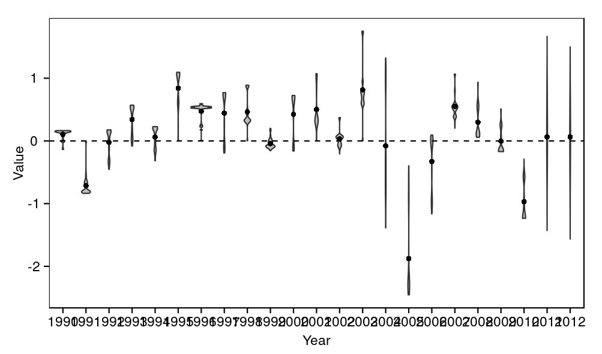

Indian Ocean skipjack model : Parameter distributions
source('../../common.R',local=T)
require(stringr)
# Read in files
load(c(
'accepted',
'rejected',
'track'
),from='../../ss3/output')
# Add columns to accepted to allow rbinding
accepted$time <- NA
accepted$year <- NA
accepted$quarter <- NA
accepted$criterion <- 0
# Bind together
all <- rbind(accepted,rejected)
rejects <- table(rejected$criterion)
| Code | Criterion | Trials failing this criterion |
|---|---|---|
| 1 | Stock status must always be >10% B0 | 3742 |
| 2 | Stock status must be less than 100% B0 since 2008 | 621 |
print( ggplot(subset(track,quarter==0),aes(x=year+quarter/4,y=biomass_spawning_overall/1000,group=replicate)) + geom_line(alpha=0.2) + scale_y_log10() + labs(x="Year",y="Total spawning biomass (`000 t)") )
library(rpart)
plot_densities <- function(param){
name <- paste0(param,".value")
values <- rbind(
data.frame(value=accepted[,name],criterion=0),
data.frame(value=rejected[,name],criterion=rejected$criterion)
)
values$criterion = factor(values$criterion)
print(
ggplot(values,aes(x=value,fill=criterion,colour=criterion)) +
geom_density(adjust=1/2,alpha=0.2) +
labs(x="Value",y="Density")
)
}
plotdensities('spawnersunfished') plotdensities('recruitsdeviations.2003.')plotdensities('movementswnw') for param in c('spawnersunfished','mortalitybase','movementstay','recruitsdeviations.2003.') figure r format png size 17x10cm const plotdensities(param)figcaptionDistribution of values of the parameter "" according to feasibility criteria (0 indicates the trial met all criteria).
temp <- melt(accepted[,paste0("recruits_deviations.",1990:2012,"..value")])
temp$year <- str_extract(temp$variable,"\\d+")
print(ggplot(temp,aes(x=year,y=value)) +
geom_violin(fill='grey') +
geom_point(data=ddply(temp,.(year),summarise,y=mean(value)),aes(y=y)) +
geom_hline(y=0,linetype=2) +
labs(x='Year',y='Value'))

recruits_deviations parameters that passed all feasibility criteria. The dots represent the mean of each distribution.